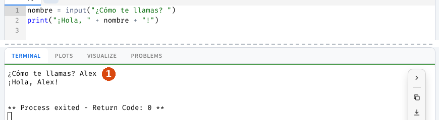
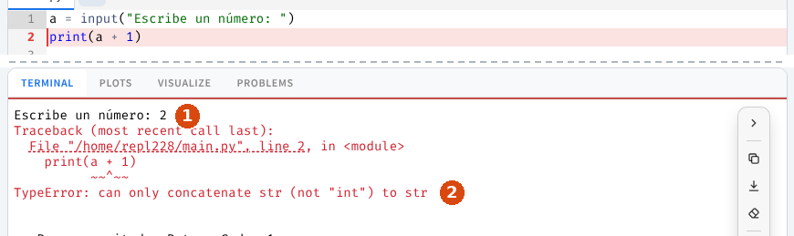
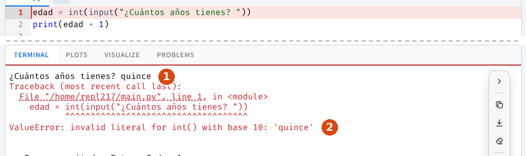

Hablar con el usuario
Un programa se vuelve interesante cuando habla con quien lo usa: le muestra información y le pide datos. Para eso tenemos dos órdenes de Python (funciones): print() (mostrar) e input() (pedir).
Mostrar información: print()
Ya conoces print(). Puede mostrar varias cosas a la vez separadas por comas; las escribe seguidas con un espacio entre ellas:
print("Hola,", "esto es", "una prueba")
# Muestra: Hola, esto es una pruebaTiene dos ajustes opcionales:
sep: qué poner entre los elementos (por defecto, un espacio).end: qué poner al final (por defecto, un salto de línea).
print(1, 2, 3, sep=" + ") # Muestra: 1 + 2 + 3
print("Hola,", end=" ")
print("mundo") # Muestra: Hola, mundo (en la misma línea)El código especial \n dentro de un texto añade un salto de línea:
print("Uno\nDos") # Muestra Uno y, debajo, DosPedir datos: input()
input() muestra un mensaje, espera a que el usuario escriba algo y pulse Enter, y te entrega lo que ha escrito para que lo guardes en una variable (se dice que lo devuelve):
nombre = input("¿Cómo te llamas? ")
print("¡Hola, " + nombre + "!")Al pulsar Run, el programa se para y espera. Haz clic en la TERMINAL, escribe tu respuesta y pulsa Enter (marca 1):

Ampliar¡Error muy común! input() siempre da texto
Aunque escribas un número, input() te da texto. Mira lo que pasa si escribes 2 aquí:
a = input("Escribe un número: ")
print(a + a) # Muestra: 22 (ha pegado dos textos, no ha sumado)Para hacer cuentas con lo que escribe el usuario, primero hay que convertirlo en número:
int(…)→ lo convierte en número entero.float(…)→ lo convierte en número decimal.
edad = int(input("¿Cuántos años tienes? "))
print("El año que viene tendrás", edad + 1)La primera línea se lee de dentro afuera: input() pregunta, int() convierte la respuesta en número y = lo guarda en edad. Solo se convierten los números. Un nombre es texto y se queda como está.
Los dos errores de esta página
Sumar texto y número. Si olvidas convertir y haces una cuenta, Python se queja con un TypeError («tipo equivocado»): «solo puedo unir texto con texto». La marca 1 es lo que escribió el usuario; la 2, la última línea, que dice el tipo de error.

AmpliarConvertir algo que no es un número. Si el programa usa int() y el usuario escribe una palabra, sale un ValueError («valor que no sirve»): no puede convertir quince en número. El programa está bien: hay que volver a ejecutarlo y escribir 15. Marca 1: lo que se escribió; marca 2: el tipo de error.

AmpliarTarea 4 · Impresión por pantalla
Crea un archivo por apartado (ejercicio1.py, ejercicio2.py…) y escribe en cada uno el programa que se pide:
- Muestra cinco números cualesquiera separados por una coma y un espacio, usando el ajuste
sepen un soloprint(). - Muestra dos palabras en la misma línea, pero con dos órdenes
print()distintas (pista:end). - Calcula y muestra la media de tres notas: 5, 8 y 9.
- Muestra «Hola mundo» en dos líneas con una sola orden
print()(pista:\n).
Tu programa debe mostrar (cada archivo su parte; con tus números y tus palabras en el 1 y el 2):
4, 8, 15, 16, 23
Hola, mundo
7.333333333333333
Hola
mundoEstá bien si… ☐ el 1 usa sep=", " ☐ el 2 usa dos print() y end ☐ el 4 tiene un solo print(). Entrega el ZIP como tarea4.zip en Google Classroom.
Tarea 5 · Pidiendo datos
Un archivo por apartado. Convierte con int() o float() solo los números que vayas a usar en cuentas:
- Pide dos números y muestra la frase «La suma de los dos números es:» seguida del resultado.
- Pide un nombre y muestra un saludo personalizado con ese nombre (el nombre no se convierte).
- Pide la base y la altura de un rectángulo y muestra su área (base por altura). Usa
float()para que acepte decimales.
Pruébalo así (lo que escribe el usuario va después de los dos puntos):
Primer número: 4
Segundo número: 6
La suma de los dos números es: 10
¿Cómo te llamas? Alex
¡Hola, Alex!
Base: 3
Altura: 2.5
El área es: 7.5Está bien si… ☐ con 4 y 6 sale 10, no 46 ☐ el saludo usa el nombre escrito ☐ con 3 y 2.5 sale 7.5. Entrega el ZIP como tarea5.zip en Google Classroom.
Verdadero o falso
Responde todas las preguntas del cuestionario.
00:00: